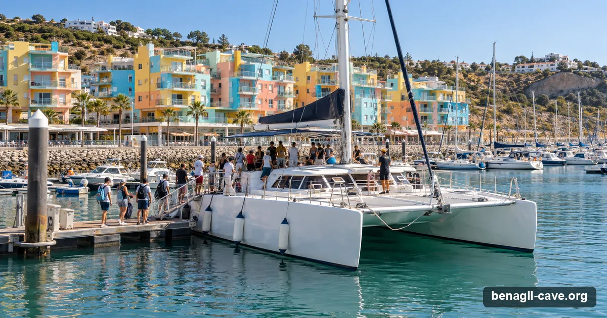

From Albufeira, a Benagil caves tour is a boat trip of about two and a half hours from Marina de Albufeira, east of the cave, usually with a search for dolphins on the way. It is the closest resort base to Faro airport, so it suits visitors staying in the central Algarve who want the caves and the dolphins in one half-day.
Bookings via GetYourGuide (we may earn a commission) · Updated 11 November 2026

Albufeira marina: the catamaran and dolphin combos start here, an hour's cruise east of the cave.
~45–60 minBy sea to the cave
MediumTour supply
~€26From, per adult
10Bookable online
From Albufeira
Why leave from Albufeira
Albufeira is east of Benagil, so the crossing is longer than from Carvoeiro or Armação de Pêra, and that extra time on the water is the point here. Most trips from Marina de Albufeira are cave-plus-dolphin outings: the most-reviewed, Dream Wave Algarve's 2.5-hour boat, has marine biologists on board and a swim stop when the sea allows. No listing promises the dolphins. Dream Wave's says there is no refund if none are seen, and XRide Algarve's says it does not guarantee them.
If you are based in Albufeira or near Faro and want one trip that combines the Algarve's headline cave with its wildlife, this is the efficient way to do it. The caves and dolphins page compares the Albufeira boats with the Lagos and Portimão ones.
Logistics
Getting there & parking
The essentials
Departure point: Marina de Albufeira (Várzea da Orada), pontoon boarding.
Time to the cave: ~45–60 min each way by catamaran.
Driving here: From Faro airport ~40 km / ~30–35 minutes — the closest departure town to the airport. From Portimão ~30 min, from Lagos ~40 min.
Parking: Park at the Marina de Albufeira reception lot or the underground parking, then a 5–10 minute walk into the marina. Far easier than Benagil; arrive early in midsummer.
One-way sea times, approximate. The closest launches spend the most of your trip at the cave.
Cave + dolphins: most Albufeira trips bundle dolphin watching with the cave. Each card below says whether the boat enters the cave when the sea allows or, like the catamarans, views it from the entrance; when it goes in, it is for the two minutes every boat gets. Dream Wave Algarve's listing says that if the Marine Police close the caves for the sea, the caves are viewed from a safe distance.
Tours
Benagil tours from Albufeira
Albufeira is served mainly by larger catamaran operators running combined cave-and-dolphin trips. Online departures with live dates first; the best-established direct operator with a verified licence is AlgarExperience.
Bookable online — departures from Albufeira
Our top pick from Albufeira has its own calendar just below; these are the alternatives, ordered by rating and price with the higher-end trips first; the most-booked boat and the cheapest seat are always in the list, private boats last. Every card opens the live GetYourGuide page.
Prices are GetYourGuide "from" prices in US dollars, per person unless the card says "priced per boat", ratings and review counts as listed on 11 November 2026; they move with season and availability — the live widget and the booking page are the reference. Every trip runs sea permitting: the skipper or guide decides on the day, and each listing sets out what happens if the sea cancels it. Booking through these links may earn us a commission at no extra cost to you; it never changes the order or the verdicts.
Book direct — the Albufeira operators on their own sites
A big, polished catamaran operation carrying a marine biologist on dolphin trips (cetacean licence AOC/25/2023). Benagil-and-dolphins from about €26–€29. The ~100-passenger catamaran likely views the cave from the entrance while a smaller RIB does the entry — check which vessel if going inside matters.
Direct prices are starting adult fares in euros (June 2026, licences re-checked September 2026) and change seasonally; confirm at booking. ✓ = RNAAT tourism licence verified on the operator's own site. Full profiles on the operators page.
See every operator, side by side
Compare all 15 Benagil operators by price, craft, cave time, licence and rating.
Albufeira: 2.5-Hour Benagil Caves & Dolphin Watching — 4.6★ from 13,797 reviews, from $38 on 11 November 2026 on GetYourGuide, free cancellation on most dates. Pick a date below; it confirms on GetYourGuide. Sea permitting: the skipper or guide decides on the day, and the Capitania do Porto de Portimão can close the caves by a notice to mariners when the sea does not allow visits. Check the sea conditions the evening before, and favour dates with free cancellation.
Before You Book
The access rules apply here too
Wherever you leave from, the same binding rules govern the cave itself. Under Edital 019/2024 of the Capitania do Porto de Portimão, in force since August 2024 and amended by Edital 009/2025 of 2 July 2025: no landing on the beach inside, no swimming or floating in, no paddle-craft outing or rental without a guide. Motorised boats enter by the western entrance for two minutes, up to five at once. Kayaks and SUPs enter by the eastern entrance in groups of six with one first-aid-certified guide, up to fourteen craft inside at once, for up to eight minutes. Life jackets are compulsory for the whole visit. It is the same cave under the same law; the town only changes how you get there.
The full text, in Portuguese and English, with dates and sources, is on the rules page. If any Albufeira operator promises a stop on the beach inside Benagil, that is the pre-2024 experience: check before paying. Sea permitting: the skipper or guide decides on the day, and the Capitania do Porto de Portimão can close the caves by a notice to mariners when the sea does not allow visits. Check the sea conditions the evening before, and favour dates with free cancellation.
FAQ
Questions about Benagil from Albufeira
About 2.5 hours on the most-reviewed Albufeira boats (Dream Wave Algarve, XRide Algarve), with the cave coast and a dolphin search in one trip; some catamaran trips run 3 hours.
Yes, on the combined trips: most Albufeira boats search for dolphins as well as running the cave coast, some with a marine biologist aboard. Sightings are not guaranteed, and Dream Wave Algarve's listing says there is no refund if no dolphins are seen. The caves and dolphins page has the details.
It’s the closest departure town to Faro (~30–35 minutes), which makes it convenient if you’re flying in or staying in the central Algarve.
The smaller boats enter for the two minutes the rules allow, when the sea permits; the catamarans view the cave from the entrance. Each card on this page says which, and you can confirm with the operator.
More Benagil & coast trips, live
GetYourGuide's full Benagil list with real-time dates — kayak and SUP tours, catamarans with dolphins, sunset runs and private boats from every town on the coast.